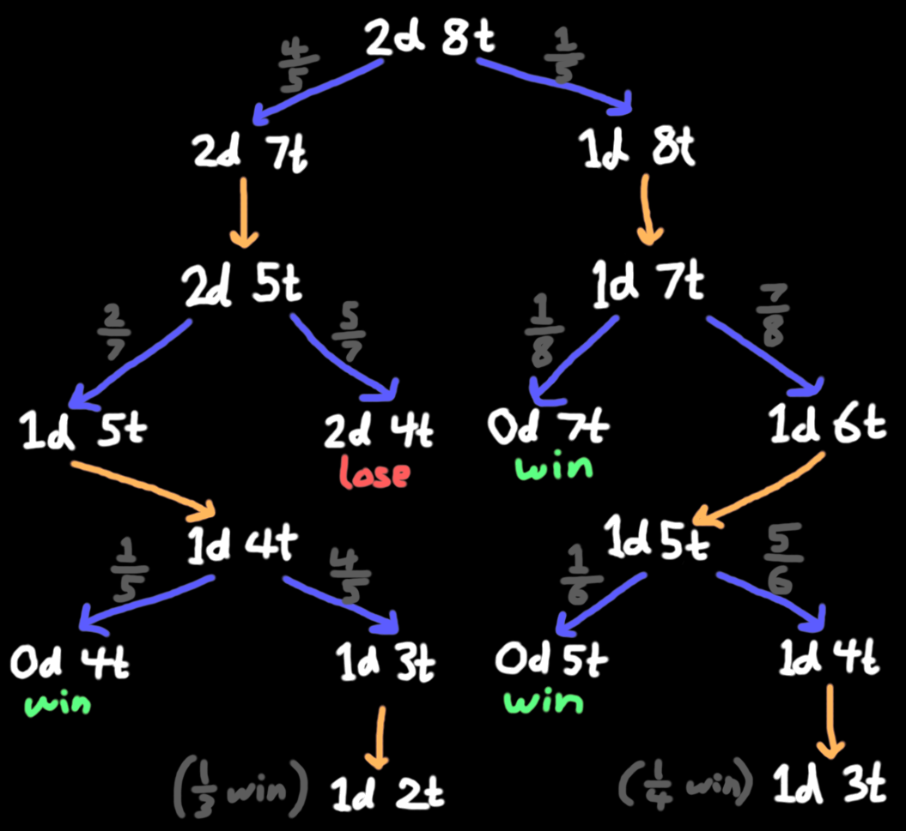
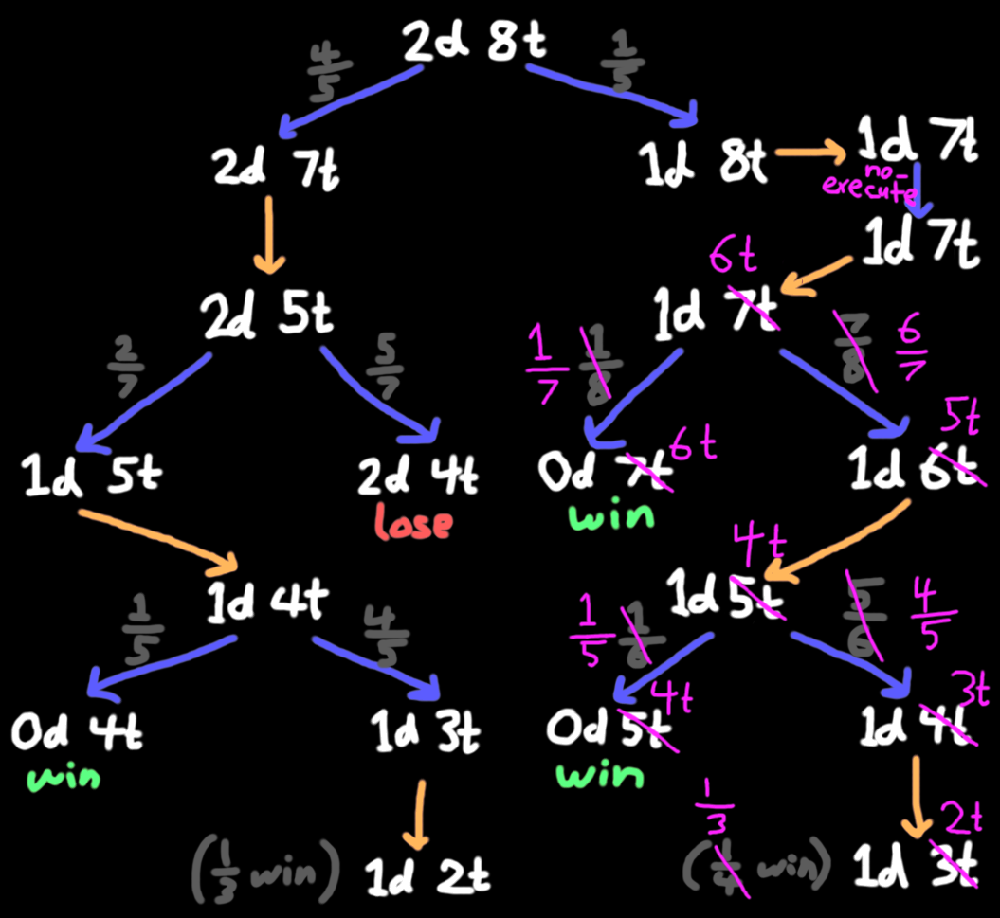

Blood on the Exceedingly Large Clocktower
2025-04-20What if you took the popular social deduction game Blood on the Clocktower, and then you removed the social part, and then you also removed the deduction part?
um, that obviously sounds like a terrible idea, why would you do that
Welcome to Bile on the Belfry!
Okay, I should start by explaining what Blood on the Clocktower is, for those who don't know. The very short summary is that much like many other games in the social deduction genre, all players are randomly assigned to a team -- there's a small evil team that knows each other, and a large good team that does not. One player on the evil team is the demon, who can kill one person every night. The town can vote every day on someone to execute, or choose to execute nobody. Good wins if the demon dies, and evil wins if only 2 people are left alive (including the demon).
... except pretty much every single sentence I said there was wrong, because the game has an absurdly large number of variations in setup ("scripts") which mess with the rules in all sorts of ways. Every player has a unique role, drawn randomly from the script, which gives them some special ability which is (usually) helpful to their team. But for the sake of simplicity, let's just leave it at that.
So, my friends and I have played a lot of this game, and naturally as a result have come up with plenty of outlandish hypotheticals about things that would not be possible in the actual game. One such hypothetical someone once idly posed was: if there were 2 demons instead of 1, so that 2 people died each night, how many people need to be on the good team for the game to be fair?
If, like in the actual game, everyone has a unique role, the game is way too complicated to analyze mathematically. So let's vastly simplify things, and just say that everyone is either a demon with no special ability (aside from the ability to kill one person each night), or a townsfolk with no ability at all. (For the Clocktower players reading this: you may be interested in appendix A: how could you have multiple demons.)
We'll assume that demons can secretly communicate at any time, so they can perfectly coordinate any strategy and won't accidentally target the same townsfolk.
Anyway, what's a sensible guess for what might be fair? I dunno, how about, say, 2 demons, 8 town. That's, like, a common ratio for Among Us, so it should be fair, right?
wrong (part 1)
Okay, these numbers are small enough that we can go through the calculations by hand.
Since town has literally no information, the best they can do is to pick someone at random to execute. (How can they choose randomly in the presence of an evil team which will try to bias the vote? See appendix B: how do you execute randomly if you're curious.) So on the first day, they have a 2-in-10 chance to execute a demon.
The 80% of the time that they miss, there will be 2 demons and 7 town left, and then both demons will kill down to 2 demons and 5 town. Now town has to hit their 2/7 chance of killing a demon, and then after the next kill there will be 1 demon and 4 town left. Finally, town has two chances to kill the last demon, which is a 1 in 5 followed by a 1 in 3. Add all this up, and you get (2/7)(1 - (4/5)(2/3)) = 2/15.
What if town gets lucky and finds a demon immediately? Then after the next night's kill, there's 1 demon and 7 town, and they get three chances to kill the last demon: a 1 in 8, then a 1 in 6, then a 1 in 4. So that's a (1 - (7/8)(5/6)(3/4)) = 29/64 chance of winning from there.
So, combining the two cases, we get an overall winrate of 0.8(2/15) + 0.2(29/64) = about 19.73%. Here's a pretty picture to visualize the game tree.
Less than a fifth chance of winning for town, huh? That's pretty bleak. But there's no way to do any better, right?
wrong (part 2)
The astute among you will have noticed that the strategy I described for town is suboptimal!
To see this, suppose there's 1 demon and 3 town left alive. If town executes someone at random, they have a 25% chance of winning, and a 75% chance of immediately losing! (If they get it wrong, they go to 2 town left, and then the demon kills 1.) It is better for town to wait a day, since then after the demon kills someone, they get to choose between 3 people instead of 4, increasing their chances to 33%.
By extension, if there's 1 demon left, it's always correct to skip an execution if the total number of players is even. If you have 10 players total, for example, you could start executing now for a 1/10, then 1/8, then 1/6, then 1/4 chance of finding the demon, or you could wait a day and get a 1/9, then 1/7, then 1/5, then 1/3. The crucial observation is that you still get the same total number of executions, so you would rather be guessing among fewer people.
(Note that this poses a slight rules problem: since town doesn't want to execute on 4, the demon also doesn't want to kill on 4, so the demon would choose not to kill and the game would reach a standstill. The base game has a mechanism to prevent this, but for our purposes, let's just say the evil team is required to kill at least 1 person every night.)
Applying the new strategy to our previous analysis, the only case town should no-execute is when they found a demon immediately on day 1, where previously I said they execute on 8, 6, and 4. Instead, they should execute on 7, 5, and 3, for an improved winrate of 19/35 in that case and about 21.52% total.
Okay, surely now we have fully explored the strategic depth of this very simple game, right?
wrong (part 3)
The astuter among you will have noticed that demons can do better too!
Suppose we have been playing the game for a while, and we're down to 2 demons and 5 town in the night phase. What should the demons do? Intuitively, it seems like they should kill 2 town -- then the game gets to 2 demons 3 town, and town has to hit a 2-in-5 followed by a 1-in-3 to win, for a win chance of 13.3%.
But what if they kill only 1 town instead? Then there are 2 demons 4 town. Town still has to execute (otherwise they will go to 2 vs 2 and lose), so they have to hit a 2-in-6 followed by a 1-in-3 (by no-executing on 4). Counterintuitively, this gives town a smaller win chance of 11.1%!
Why does this happen? In this case, it's because the threat of 2 demons is enough to force town to execute on 6, even though they would rather wait until 5. They aren't allowed to wait because if they chose not to execute, the fact that there are 2 kills means they would go straight from 6 to 4.
This happens to never be relevant in our 2 vs 8 example, though, so town's winrate is still around 21.52%. And now we've considered all possible actions for both town and the demons, so we're definitely done and we have the actual answer ... right? Wait are you seriously telling me--
wrong (part 4)
The astutest among you will have noticed that considering only fixed strategies is not enough!
Let's go back to the 2 demon 8 town example. Suppose that town misses their first execution, so there are 2 demons and 7 town left. What if the 2 demons then choose to only kill 1 person?
Now there are 2 demons and 6 town left, for a total of 8 players. But to the town, this is indistinguishable from the scenario where they found a demon on their first execution, resulting in 1 demon and 7 town. In other words, the demons are bluffing -- they are pretending there are fewer demons than there actually are.
Why would they do this? It's because town's strategies in these two cases are different! In the 2 demon 6 town case, they should execute someone, but in the 1 demon 7 town case, they should skip the execution, since there's one demon and an even number of players.
So, what should town do if they wake up on day 2 and learn that there was only one kill? If demons never bluff, they can safely assume there's only one demon left, so they can no-execute. If demons always bluff, then day 2 will always contain only one kill, so they can reason that they probably didn't get lucky and it's likely they should execute again. The general solution to optimal play for this kind of game is called a mixed strategy Nash equilibrium, in which both teams employ randomness -- the demons will only sometimes bluff, and so town is forced to only sometimes call the bluff.
The math is way too complicated to write out here, so I'll just tell you how it works out: demons are supposed to bluff at a rate of exactly 3/112 (about 2.7%), and if town wakes up on day 2 to one kill, they should execute exactly 1/4 of the time. This reduces town's winrate to 451/2100 ≈ 21.48% -- the ability to bluff helps evil's winrate by a bit under 0.05%.
large piles of numbers!
So, going back to the original question: clearly we need more than 8 town to make this game fair. How many?
With truly optimal play, this is wildly unreasonable to answer, since the game tree massively explodes in size when you allow bluffing. Fortunately, I can solve this problem by slightly changing the rules! We'll now be playing this script:
| Imp | Each night*, choose a player: they die. If you kill yourself this way, a Minion becomes the Imp. | |
| Undertaker | Each night*, you learn which character died by execution today. |
Instead of being powerless townsfolk, all townsfolk are now the Undertaker, which learns whether town found a demon or not. Problem solved! (The Oracle would also do, but I like that this script is a subset of Trouble Brewing, the most battle-tested and highly-celebrated script in the game.)
This version of the game is much more tractable to solve by computer. And I did so! My code for all of the below results is publicly available, though a bit disorganized.
First off, here are the numbers resulting in a fair game for each demon count:
| demons | town |
|---|---|
| 1 | 6 |
| 2 | 33 |
| 3 | 144 |
| 4 | 533 |
| 5 | 1,839 |
| 6 | 6,054 |
| 7 | 19,342 |
| 8 | 60,461 |
| 9 | 185,895 |
| 10 | 564,181 |
| 11 | 1,694,362 |
| 12 | 5,044,564 |
| 13 | 14,909,790 |
| 14 | 43,794,249 |
These are the numbers that give town a slightly higher than 50% winrate, but with one fewer townsfolk they would have a slightly lower than 50% winrate.
What about optimal strategies? Here are the numbers on which town should no-execute:
| demons | town | repeat |
|---|---|---|
| 1 | 3 | 1 mod 2 |
| 2 | 26 | 2 mod 3 |
| 3 | 1,144 | 4 mod 12 |
| 3 | 1,152 | 0 mod 12 |
| 3 | 31,268 | 8 mod 12 |
| 4 | 1,121,090 | 10 mod 20 |
| 4 | 1,121,095 | 15 mod 20 |
| 4 | 1,320,025 | 5 mod 20 |
| 5 | 573,193,737 | 27 mod 30 |
| 5 | 573,193,743 | 3 mod 30 |
| 5 | 573,193,749 | 9 mod 30 |
This table requires a bit of explanation. Each row means that you should no-execute when the number of town is at least the number given under "town", and also satisfies the condition under "repeat". The condition is given in the form "x mod y", which is satisfied if dividing the townsfolk count by y gives a remainder of x. In other words, you start at the given town number, and take every yth number from there. So, with 2 demons, the numbers to no-execute on are 26, 29, 32, 35, 38, ....
I've "only" checked up to 2 billion town, which took my code about 40 minutes. So the no-execute numbers for 6+ demons all start somewhere above 2 billion.
There's a few interesting things about these numbers. For one thing, they're, like, really big?? It's kind of surprising that this very simple game has a change in optimal strategy at 500 million. Where did that number even come from?
Also, I have no intuition at all for the first numbers in the "repeat" column. The second numbers make a little sense -- it looks like the strategy is based on numbers mod d(d+1) at first (where d is the number of demons), but eventually settles to numbers mod (d+1). That's intuitive enough: if it is somehow "undesirable" to take a turn on some number mod (d+1), then if town no-executes on that number and demons full-kill, town gets to execute back to that number and force demons to take an "undesirable" turn. But why does the "undesirable" number happen to be 2 mod 3, 0 mod 4, 0 mod 5, and 3 mod 6? I have no idea.
(Note that I'm sort of implicitly assuming that somewhere above 2 billion town where I haven't checked, there's a row for 0 mod 20 with 4 demons. It would be even more surprising if for some reason this never happens!)
what about demon strategy?
Unfortunately, this is where it gets a little messy.
With 2 demons, it's not so bad. The demons are supposed to kill 1 person when the number of town is 5, 11, or ≥17 and 2 mod 3. In other words, they underkill on all numbers 2 mod 3 except 8 and 14.
What about 3 demons? Uhh, here's a table.
| 0 | kill 2 on 120 | kill 1 on 31284 | [town nokill 1152] |
| 4 | kill 1 on 1048 | [town nokill 1144] | |
| 8 | kill 2 on 128 | kill 1 on 1040 | [town nokill 31268] |
| 1 | kill 2 on 31285 | ||
| 5 | kill 2 on 1049 | ||
| 9 | kill 2 on 1041 | ||
| 2 | kill 2 on 1154 | kill 3 on 31286 | |
| 6 | |||
| 10 | |||
| 3 | |||
| 7 | |||
| 11 |
The number on the left is number of town mod 12. Then you read each row from left to right, where you keep doing what it says until the next number (if any). So, for example, the first row means that you should kill 2 on 120, 132, 144, 156, ..., 31260, 31272; and then you should kill 1 on 31284, 31296, 31308, and so on, going on forever.
Again, this is very weird and confusing to me. The major strategy breakpoints seem to be around 120, 1040, 1150, and 31270. I've also annotated the table with where town will choose to no-execute, since naturally those line up with demon strategy (but not in any clear structured way).
I'm not really sure what else I can say about the next ones, so I'll just throw two more tables at you. They're big, so click below if you want to look at them:
| 0 | kill 1 on 1121100 | ||
| 5 | kill 2 on 1121085 | [town nokill 1320025] | |
| 10 | kill 1 on 1121090 | [town nokill 1121090] | |
| 15 | kill 1 on 1121095 | [town nokill 1121095] | |
| 1 | kill 2 on 691201 | ||
| 6 | kill 3 on 691206 | ||
| 11 | kill 1 on 691211 | kill 2 on 1121091 | |
| 16 | kill 1 on 691216 | kill 2 on 1121096 | |
| 2 | kill 3 on 2982 | ||
| 7 | |||
| 12 | kill 2 on 2972 | kill 3 on 1121092 | |
| 17 | kill 2 on 2977 | kill 2 on 1121097 | |
| 3 | |||
| 8 | kill 3 on 5828 | ||
| 13 | kill 3 on 2813 | kill 4 on 1121093 | |
| 18 | kill 3 on 2818 | kill 4 on 1121098 | |
| 4 | |||
| 9 | |||
| 14 | |||
| 19 |
| 0 | 3 on 1099320 | |||
| 6 | 3 on 1099326 | 4 on 573193746 | ||
| 12 | 3 on 1099302 | 4 on 573193752 | ||
| 18 | 4 on 1099308 | |||
| 24 | ||||
| 1 | 4 on 563791 | |||
| 7 | 4 on 563797 | 5 on 573193747 | ||
| 13 | 4 on 563773 | 5 on 573193753 | ||
| 19 | ||||
| 25 | 4 on 48846055 | |||
| 2 | ||||
| 8 | ||||
| 14 | ||||
| 20 | ||||
| 26 | ||||
| 3 | 4 on 172863 | 1 on 573193743 | ||
| 9 | 1 on 573193749 | |||
| 15 | 4 on 172875-432855 | 4 on 48846105 | 1 on 573193725 | |
| 21 | 4 on 172881 | 2 on 573193731 | ||
| 27 | 4 on 172887 | 3 on 573193737 | ||
| 4 | 2 on 573193744 | |||
| 10 | 2 on 573193750 | |||
| 16 | 2 on 573193726 | |||
| 22 | 3 on 573193732 | |||
| 28 | 4 on 573193738 | |||
| 5 | 4 on 17435-432845 | 2 on 1099325 | 3 on 573193745 | |
| 11 | 4 on 114461 | 2 on 1099301 | 3 on 573193751 | |
| 17 | 4 on 17447 | 3 on 1099307 | ||
| 23 | 4 on 17423 | |||
| 29 | 4 on 17429-109919 | 2 on 48846059 | 5 on 573193739 |
These are also only checked up to 2 billion town; the 5 demon case almost certainly has further changes at higher numbers, and probably the 4 demon case too.
There is at least one thing, admittedly very small, that I can say about all of this. You'll note that of the groups of rows I've broken each table into, only one of them ever contains no-executes from town. (I didn't include them in the 5 demon table because I'm sure I haven't found all of them, but it's the 3 mod 6 group.) The group immediately under this one is completely empty, i.e. it always has the demons killing the full amount. This makes a lot of intuitive sense to me -- since the smaller groups are mod (d+1), full-killing from this group will bring the game to the no-execute group, which the demons are happy about (since they both get to kill the full amount and put town on the bad parity).
alternative scripts (or, "this wasn't complicated enough")
If you are a highly experienced Blood on the Clocktower player, you might be aware that the game has more than two roles. Most of them either don't make sense in this setting (like Investigator), involve too much storyteller discretion (like Washerwoman), or are entirely unreasonable to analyze (like Empath). But I think there are a few others that would be interesting to look at!
| Juggler | On your 1st day, publicly guess up to 5 players' characters. That night, you learn how many you got correct. | |
| Village Idiot | Each night, choose a player: you learn their alignment. [+0 to +2 Village Idiots. 1 of the extras is drunk] |
These two characters are quite similar, in that when everyone is one of two roles, "learn a character" and "learn an alignment" are the same.
In both of these cases, analyzing optimal win probability is totally out of the question. The roles are too complicated, and there are far too many plausible strategies to check. So instead, I'll ask a different question: for a fixed number of demons d, with slightly simplified versions of the character, what's the smallest number of copies of the character you need such that you can show me a strategy that guarantees a win for town?
I won't go into too much detail on these, since (1) I haven't thought about it much, and (2) this post is already ridiculously long. But here are a few baseline strategies that can definitely be improved on.
For Juggler, I want to modify the role to replace the number 5 with the number 1. This effectively makes the "1-Juggler" a single-use Village Idiot. (I'm sure the 5-Juggler would also be very interesting to analyze, but there are so many possible strategies, and the possibilities are too vast for my measly brain.)
A natural strategy for 1-Jugglers is to have each player juggle the person to their left in the circle. After the demons kill the next night, this will result in several long chains of juggle results. It is in the demons' best interest to put all the demons at the heads of chains, because if any town → demon juggle goes through, it is 100% confirmed that one of them is evil, and town can simply execute them both.
So, suppose demons can arrange for all juggle results to be reported as good. (A demon → demon will obviously claim good, and a demon → town should as well because it's not worth trading 1 for 1.) How many demon candidates will be left? Well, the d demons can split the circle into at most d chains, and if the entire chain reports "good", then at most the first d of them could be demons. So we get at most d² demon candidates. How many town are necessary to have time to kill them all?
Supposing town gets as unlucky as possible, they will skip the first execution (while awaiting juggle results), then execute townsfolk for the first d²-d days, then demons for the remaining d days. This means that after the initial d kills, there will be (d²-d)(d+1) town killed during the unlucky period, and then d-1 + d-2 + ... + 1 = d(d-1)/2 town killed afterwards. There need to be 2 town who survive to the end of the game, so the number of town needed is d + d(d-1)(d+1) + d(d-1)/2 + 2 = d(d-1)(d+3/2) + d + 2 total. This is only slightly more than d³. Here are a few concrete numbers:
| demons | town |
|---|---|
| 1 | 3 |
| 2 | 11 |
| 3 | 32 |
| 10 | 1,047 |
| 20 | 8,192 |
| 50 | 126,227 |
| 100 | 1,004,952 |
That strategy might actually be optimal; I haven't thought much about it. But what is definitely not optimal is my fairly naive strategy for slightly-modified-Village-Idiot.
I think Village Idiot is actually maybe the most fitting role possible for this scenario, since the whole gimmick is that there's more than one of them. The slight modification I'm making is to remove the "one of them is drunk" clause ("drunk" just means "receives arbitrary info"), since it adds too much complexity.
Suppose we have d² + 2d Village Idiots. You're not allowed to communicate before the start of the game. So on the first night (before any kills), since town is getting as unlucky as possible, everyone in the game accidentally checks the same person, oops. Then on the second night we do the same thing as with the 1-Jugglers, and make a big cycle. After the d kills, we have d² demon candidates, which leaves 2d alive players that are confirmed town.
The next night, all of them get to check someone from the demon candidates. It's obviously very good for town if they find a demon, so in the worst case, none of them will find a demon. Also, up to d of them will die, which prevents them from using their ability that night. So we lose up to d confirmed town, but we also gained d confirmed town from the newly checked players. There are still 2d living confirmed town! This can continue forever, until eventually there are only d unchecked players who must be the demons.
... except at that point, everyone else is dead, and town doesn't have enough time to execute them all. So we actually need to start with a bit more than d² + 2d. If we start with, say, d² + 3d instead, then we get 3d confirmed town after night 2, then (3d-d)*2 = 4d confirmed town after night 3, then 6d, then 10d, then 18d, increasing exponentially. If you do the math, this is more than enough to finish checking everyone fast enough. So the smallest number you need for this strategy to be guaranteed to work is somewhere between d² + 2d and d² + 3d.
What is it exactly? There's no closed form formula, but it's very easy to compute numerically; here are a few of the values.
| demons | coefficient |
|---|---|
| 1 | 2.4266083995397340829 |
| 2 | 2.1225720002207882109 |
| 3 | 2.1039061833629444427 |
| 10 | 2.0449642216903865382 |
| 20 | 2.0031742463604949081 |
| 50 | 2.0000002550073462512 |
| 100 | 2.0000000000000154489 |
These are slightly off due to rounding (you can only have an integer number of days), but the point is that it very quickly converges to 2.
But also, this strategy is very clearly suboptimal -- among the d² demon candidates, most of them are town, and this strategy isn't using any of their abilities! They should clearly be continuing to check each other, which both adds extra information (even though some of them are lying) and wastes some of the demon kills (since the demons really don't want to let a town checking them survive). I bet you can get significantly under d² + 2d like this, at least for large enough d.
Anyway, enough of that! Here are a few more potentially interesting roles, which I'll go over much more briefly since I ended up writing a billion words about those two.
| Klutz | When you learn that you died, publicly choose 1 alive player: if they are evil, your team loses. | |
| Psychopath | Each day, before nominations, you may publicly choose a player: they die. If executed, you only die if you lose roshambo. | |
| Zombuul | Each night*, if no-one died today, choose a player: they die. The 1st time you die, you live but register as dead. |
The effect of these is just to change the scale of the numbers -- they don't add any interesting strategy at all. But I would still be interested to see how the scale changes. In particular, we've seen many different growth rates for the appropriate number of town so far: approximately 3d Undertakers for a fair game, approximately d³ 1-Jugglers for a guaranteed win, and approximately d² Village Idiots for a guaranteed win. What do these look like? (That one is actually a rhetorical question, I haven't done the math.)
The Klutz just makes town randomly lose sometimes; having thought about it only a little, I suspect it might even make town's winrate largely a function of number of demons, where even if you add 6 trillion town you still won't do any better. Psychopath makes all the demons public, resulting in even less strategy, but they only have a 1/3 chance of dying (you almost certainly know "roshambo" as "rock paper scissors"). Slightly-modified-Zombuul where you remove the "if no-one died" clause very directly just tunes a number -- it takes 2 days to execute instead of 1.
(Incidentally, unmodified Zombuul is very funny, since I think rules as written it has literally no effect at all: whenever you execute, it turns off every Zombuul's ability, and then when you execute the same person the second time, even if that person was a half-dead Zombuul, I think the other Zombuuls still get to kill. The rules are not totally clear about what happens when there are multiple Zombuuls, which to be honest is extremely fair.)
| Magician | The Demon thinks you are a Minion. Minions think you are a Demon. |
The net effect of this one is just that now, demons and town are on equal footing; neither of them know who each other are. Demons will kill randomly instead of always killing town, and the number of town needed will go down substantially. But again, I haven't done the math yet.
| Slayer | Once per game, during the day, publicly choose a player: if they are the Demon, they die. |
This is absolutely terrifying to think about analyzing, which of course means I probably will in a future blog post.
Finally, I will leave you with this:
| Mutant | If you are "mad" about being an Outsider, you might be executed. |
The Mutant is an outsider that risks death if they try to communicate this ("mad" approximately means "trying to convince town"). But if the script is just a demon and Mutant, then it becomes optimal play for every player to claim to be a demon, which I think is extremely funny.
conclusion
That was Bile on the Belfry! Thanks for entertaining my nonsensical rambling. I hope to some day gather 43,794,262 other people so we can play the 14-demon variant in real life!
appendix A: how could you have multiple demons
How many ways are there in the actual game to generate a state with more than one living demon? I'm sure anyone who's played a lot of Clocktower can think of several ways, but here's all the ways I can think of (I'm sure there's more), all of which (except Legion/Riot) would require extremely questionable player, storyteller, and/or script choices:
- Legion/Riot (but these demons don't kill, obviously)
- Pit-Hag creating a demon and the ST inexplicably not killing the old one
- Pit-Hag or Plague Doctor or Engineer or Hatter or Apprentice creating a Summoner
- Barista duplicating Summoner
- Pit-Hag or Philosopher or Cannibal or Pixie creating an Alchemist-Summoner
- Recluse swapped by Barber into Summoner (or a demon directly, depending on rules interpretations)
- Recluse picked by Snake Charmer
- Recluse becoming a (good) demon after Hatter death
- Recluse death caught by Scarlet Woman
- Zombuul death caught by Scarlet Woman (but then one registers as dead)
- Al-Hadikhia or Shabaloth death caught by Scarlet Woman who then picks them
- Professor resurrecting a Boffin-Alchemist-Spy dead demon (via Scarlet Woman or Fang Gu or Imp)
- Alchemist or Plague Doctor or Apprentice creating a second Scarlet Woman with one already in play
- [insert arbitrary Amnesiac nonsense]
- [insert arbitrary Wizard nonsense]
appendix B: how do you execute randomly
Let's say we don't have access to a coin to flip, or a die to roll, or any similar public source of randomness. How is town supposed to choose someone at random to execute, if demons will do everything in their power to influence this "random" choice?
Here's a pretty simple protocol: number everyone left alive in the circle from 0 to n-1. Then, every player chooses a random number between 0 and n-1 inclusive (you can let dead people choose too, it doesn't matter). Add the numbers up, take the result mod n, and kill that person.
Of course, if you go around saying your "random" numbers in order and the last person in line happens to be a demon, they can claim their number was whatever would result in a town dying. So you have to have some mechanism for everyone to prove they chose their number without hearing the others. There are two ways you could do this: simultaneity or cryptography. You could just have everyone say a number at the same time. Of course, if 43,794,263 people are doing this, it might be hard to hear all of them. Alternatively, you could have everyone go around and say a cryptographically secure hash of their number (plus a salt), and then once everyone has done this, reveal their number+salt, which can be checked to match the hash.
Note that all of these protocols rely on the ability to punish people who don't follow them. If someone refuses to give a number, or says a number that doesn't match their hash, or anything similar, they are a demon and you can just kill them instead. Town always has voting majority, and is therefore capable of enforcing their rules.
Finally, if you're interested in real-life applications (and you don't intend to play the extremely fun games described here in real life), this problem is actually quite related to actual research in algorithms. The relevant keywords are "game theoretically fair leader election". (The irony of appealing to theoretical mathematics as a "real-life application" is not lost on me, but oh well.)
comments
There are no comments yet.